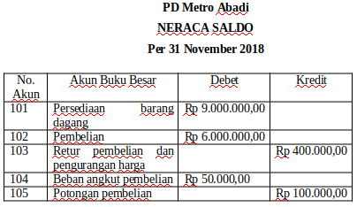
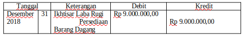
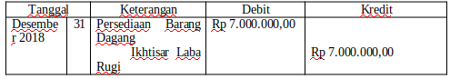
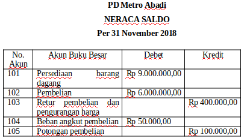
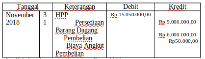
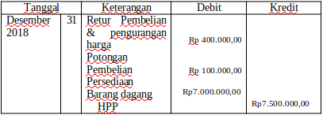

a. Metode Ikhtisar Laba/ Rugi.
Contoh Soal :
Perhatikan Neraca Saldo (sebagian) PD Metro Abadi

Data Penyesuaian per 31 Desember 2018
Persediaan barang dagang per 31 Desember 2018 adalah Rp 7.000.000,00
Jawab:
Jumlah persediaan barang dagang PD Metro Abadi menggunakan pendekatan ikhtisar laba rugi, disesuaikan dengan langkah-langkah sebagai berikut:
(1) memindahkan saldo akun persediaan barang dagang awal ke akun ikhtisar laba rugi dan
(2) memunculkan saldo akun persediaan barang dagang akhir.
Pemindahan saldo akun persediaan barang dagang awal ke akun ikhtisar laba rugi dilakukan dengan mendebet akun persediaan barang dagang dan mengkredit akun ikhtisar laba rugi, masing-masing sebesar Rp 9.000.000,00.
Ayat Jurnal Penyesuaian Persediaan Awal:

Data penyesuaian per 31 Desember 2018 menunjukkan bahwa saldo persediaan barang dagang akhir adalah sebesar Rp 7.000.000,00. Saldo ini ditimbulkan dengan mendebet akun persediaan barang dagang dan mengkredit akun ikhtisar laba rugi, masing-masing sebesar Rp 7.000.000,00.
Ayat Jurnal Penyesuaian Persediaan Akhir

b. Metode HPP
Perhatikan Neraca Saldo (sebagian) PD Metro Abadi

Data Penyesuaian per 31 Desember 2018
Persediaan barang dagang per 31 Desember 2018 adalah Rp 7.000.000,00
Jawab:
Analisis junal penyesuaian persediaan awal

Analisis junal penyesuaian persediaan Akhir
